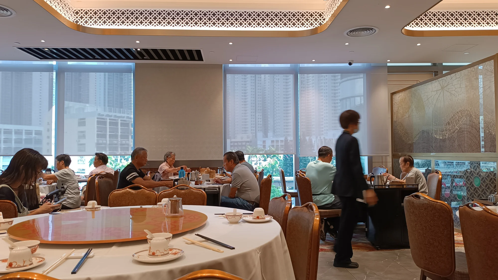
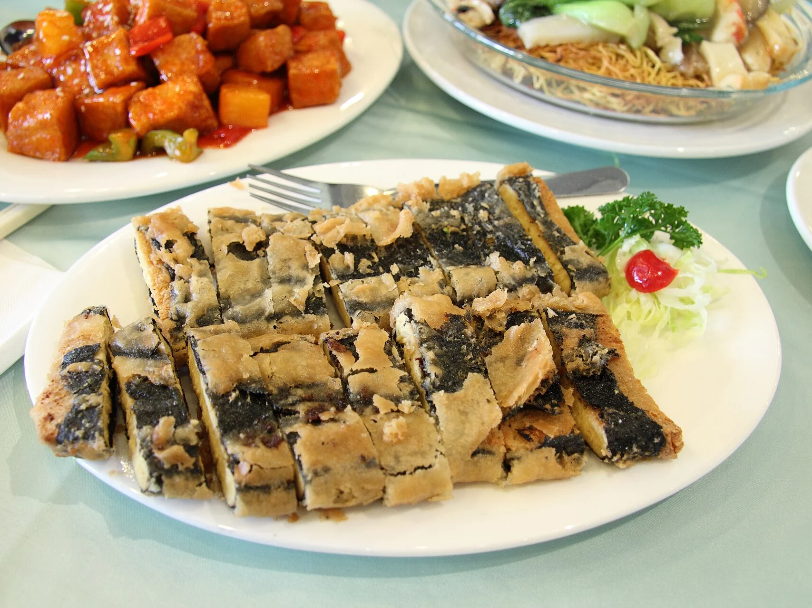
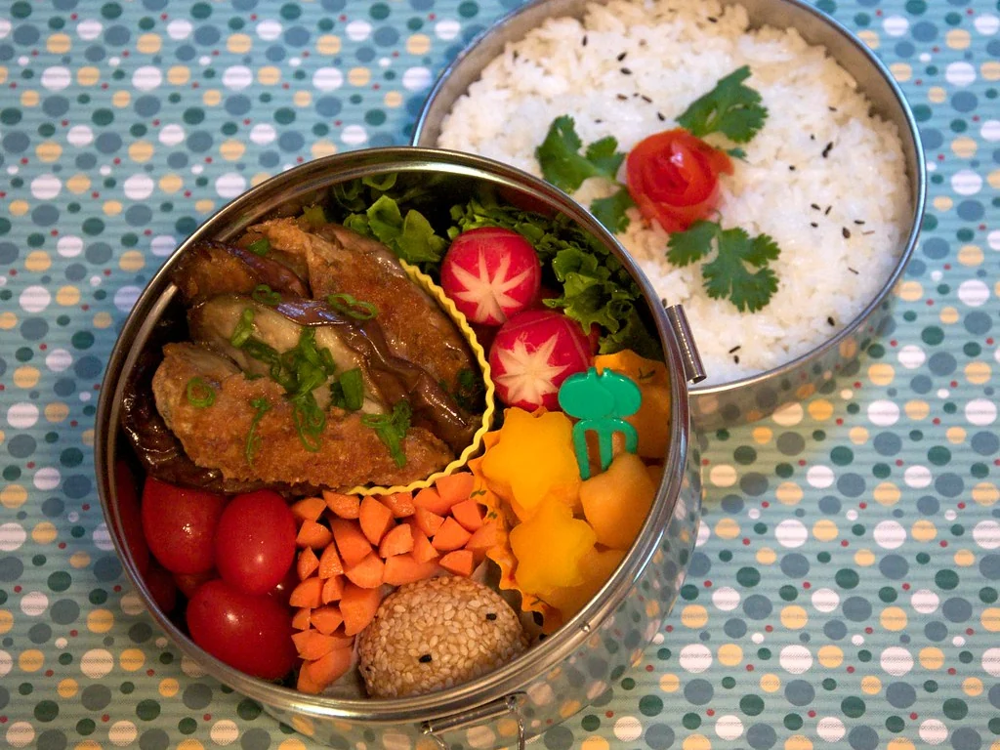
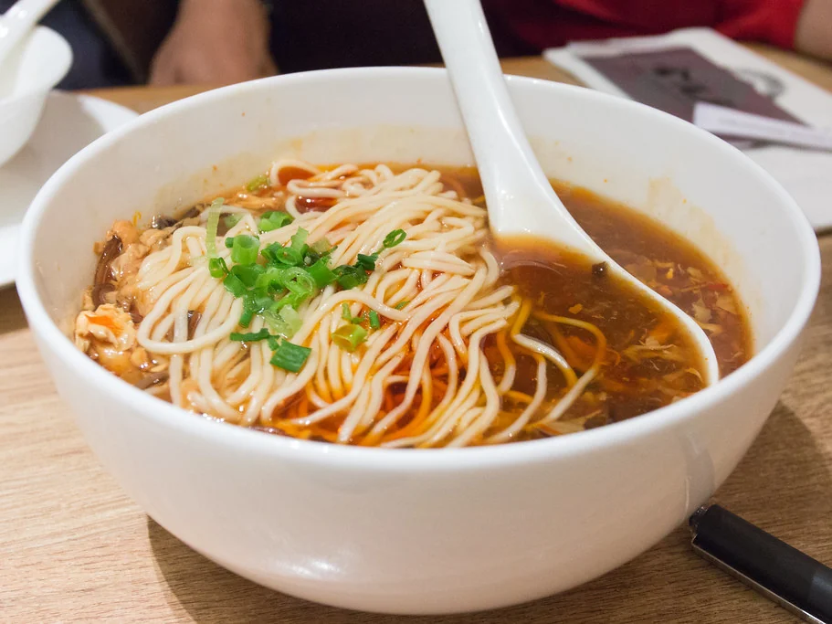

Photos d'illustration — elles ne montrent pas La Perle d'Orient. Envoyez-moi vos propres photos et je les remplace.
Le bistrot
Le restaurant
La Perle d'Orient est un restaurant chinois de Mersch, ouvert depuis 2001. Notre carte est aussi disponible en livraison.

En images
En images


Nous trouver
Nous trouver
- Appeler
- +352 26 32 12 42
- Adresse
- 1, rue Emmanuel Servais, L-7565 Mersch